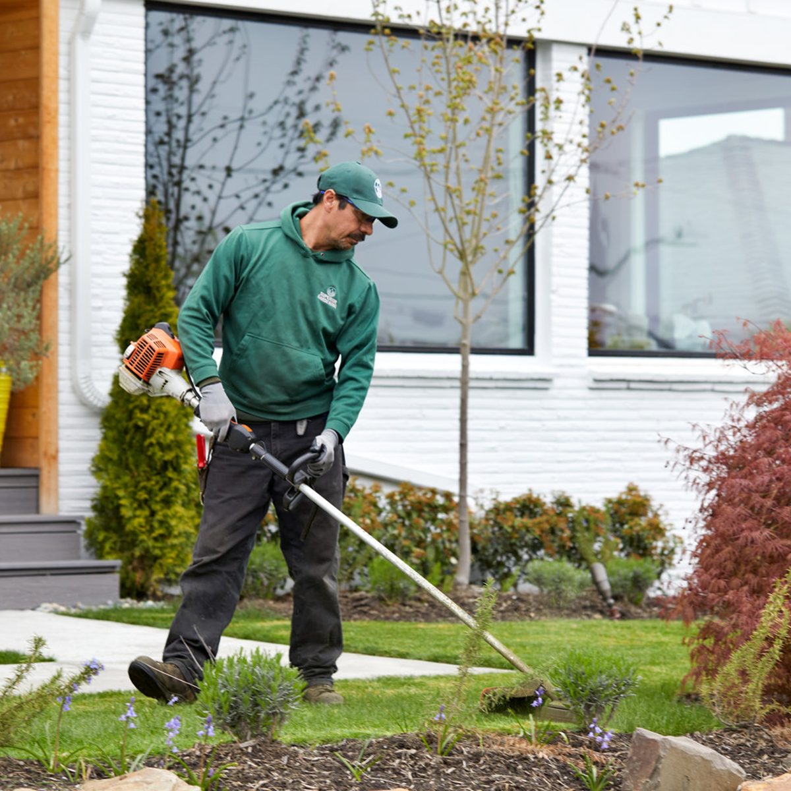
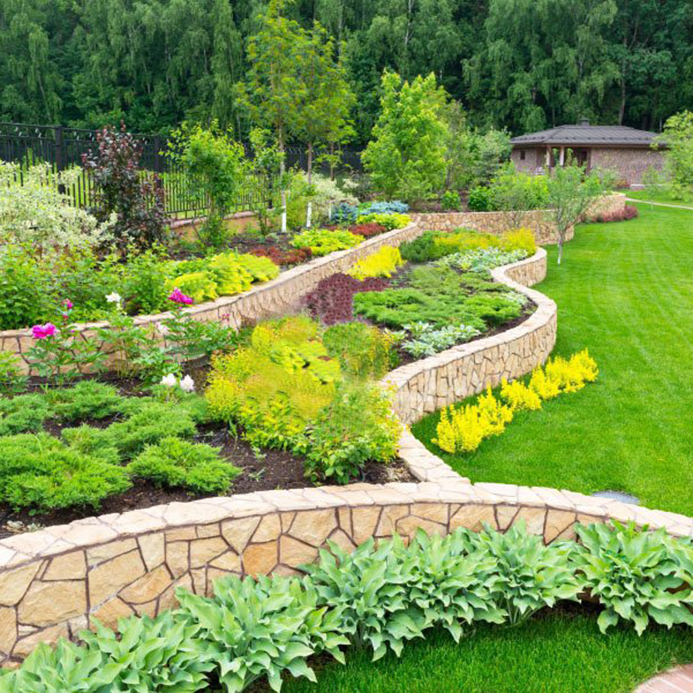
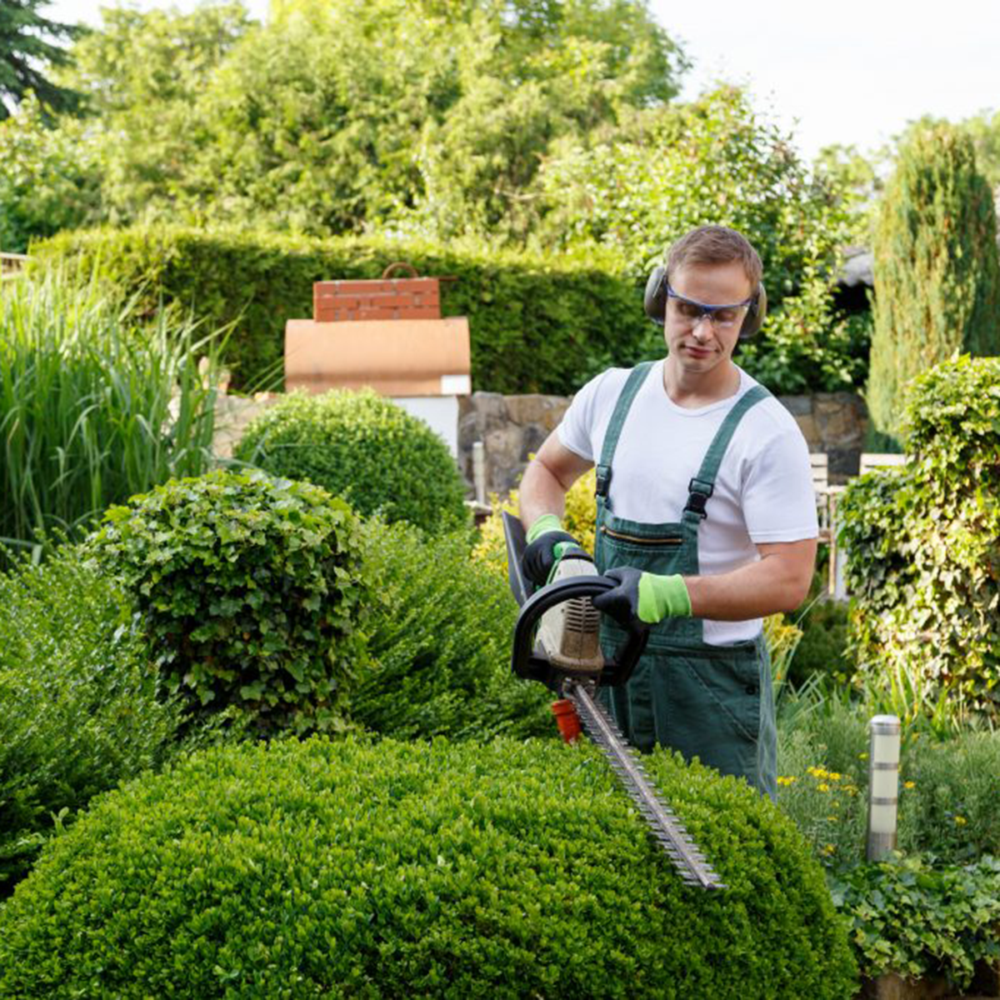

Beautiful Landscapes and Gardens Start Here



The art of maintaining your yard, garden, or other areas outside of your home is known as landscape or garden maintenance. This can be done at a residential location, or at an institutional or commercial setting. This may involve maintaining the health of the lawn, garden, or flowers in the area, allowing everything to look healthy and pristine. Although this is something that the average person can do with a typical residential yard, if they have a front and backyard, with a significant amount of grass, trees, and foliage, doing this on their own may not be possible. That’s why it is important to find a reputable landscaper that may be able to help with this type of outdoor maintenance. Here are a few tips on finding reputable landscape maintenance services that will have the experience necessary to handle both residential and commercial landscaping projects in a professional manner.
"Juan and his crew just finished landscaping our back yard and we couldn't be more pleased. He was pleasant to work with, listened to what we wanted, but came up with suggestions when we needed direction. He and his crew show up on time, work hard all day, and then keep the site clean." -Julia from San Mateo